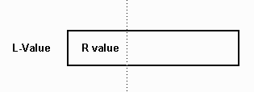
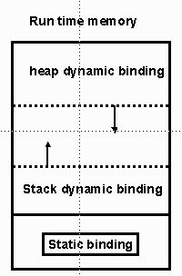
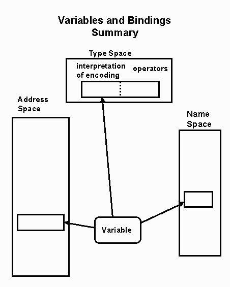
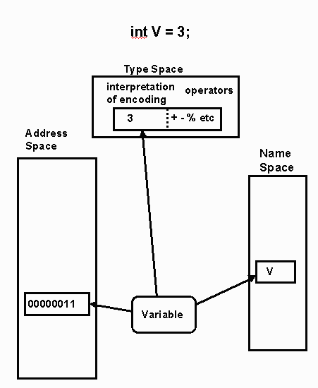

Variables - - Spring, 2000
Goal
-
To understand the semantics issues of variables and their relationship
to language design decisions.
What will be covered ?
-
binding
-
data types
-
scope
-
l-value
-
r-value
-
Imperative languages will be the main focus of this discussions.
These notes are based on Programming Language Concepts by Ghezzi
and Jazayeri and Concepts of Programming Languages by Sebesta.
Computer Memory and Variables
-
Computer memory is a sequence of 0's and 1's.
-
Organized in units of bytes (or words) called cells.
-
These units are identified by an address.
-
The contents of these units represent values.
-
The values can be read and modified during execution.
-
Variables are an abstraction of a memory cell or collection
of cells.
-
Attributes of a variable
-
name (identifier)
-
address (location)
-
type
-
value
-
scope
Definition
-
A variable is a 5-tuple
<name, scope, type, l-value, r-value>
where
-
name is the character strings to identify it
-
scope is the range of program instructions over which the
name is known
-
type is the set of values and its associated operations
-
l-value is the location in memory
-
r-value is the encoded value stored
-
These are called attributes
Binding
-
A binding is an association between an attribute and an entity
-
A variable is bound to its attribute
-
Possible binding times
-
STATIC BINDING (early binding)
occurs before the program executed i.e.
language design time
language implementation time
compile time
load time
-
DYNAMIC BINDING (late binding)
is established at during run time
-
The selection of static vs dynamic binding times involves the conflict
between efficiency and flexibility
Example: y := y + .9
-
Set of possible type for variable y
-
Usually set at language design time
-
Type of variable y.
-
Usually set at translation time but not in always
-
Set of possible values is determined by either the hardware or at
load time
-
Value of y -- dynamic binding (during execution)
-
Assignments change bindings
-
Representation of .9
-
language design / implementation time
-
Properties of +
-
language design time / compile time
Java:
final static int num = 5;
-
num's attributes are the type int, value 5, and constant
-
All bound before execution
Data Types
-
A data type is a set of values, together with a set of operations
for creating and manipulating objects of that type.
-
Therefore classes and interfaces in Java can be considered types.
-
Languages have
-
predefined types
-
simple (scalar, primitive) types
-
discrete types
-
enumerated types
-
subrange types
-
and type constructors.
Type Binding
-
Usually static
-
explicit declaration
-
implicit declaration
Fortran
perl
-
Has 3 data types
-
scalar denoted by $
-
numbers, strings, references
$a = 17.38;
...
$a = "Perl Code";
-
lists (called arrays) denoted by @
@a = (2, 4, 5);
-
hashes (also called associative lists).
%a =("key1" => 100, "key2" => 50);
-
Has implicit variables
$_ , text read from a file is put into $_
@ARG, (same as @_) array variable used to transmit parameters
-
inferred
-
sometimes dynamic
-
Prolog, lisp, APL(example)
A <- 36
A <- 10.5 3.2 6.0
A <- "abc"
-
Static binding allows for static type checking
Java:
-
All the attributes are bound statically to “n”
int x;
x = 5;
Object obj = new Object( );
-
Static: The type int to “x” and the type Object to “obj”.
-
Dynamic: The value 5 to “x” and the new Object( ) to “obj”.
Scope
-
Scope is the region of the program which the variable can
be referred to by using its simple name (identifier).
-
Static scoping (lexical scoping)
-
Visibility of variable follows the structure of the blocks they are written
in
-
Does not depend on function calls
-
scope hole: when the name bound to an object is hidden by
a nested declaration of the same name
{ int hide = 1;
{ float hide = 1.0
}
}
-
Ada allows a qualifier to access the outer declared variable.
-
Ada calls this visiblity by selections.
-
Java allows a qualifier to access a hidden instance/class variable
-
C only allows declarations at the beginning blocks
-
Algol 68, C++, Java allow declarations anywhere
-
Dynamic scoping
-
visibility of variable depends on sequence of function calls
-
can not determine from written code
-
APL, Snobol, early versions of LISP, Perl
Perl : local variables in a functions
-
There are two different ways to create nonglobial variables.
-
STATIC Scoping
-
my function creates a variable
sub sub1 {
my $sum = 0;
...
}
whose
-
scope is the block
-
lifetime is from the execution of the my function to the end of
the execution of the block.
-
Dynamic Scoping
-
local creates a non-globial variable
sub sub1 {
local $dyn = 0;
...
sub2
}
sub sub2 {
# locations of $dyn is dynamic
$dyn = "wow"
}
-
lifetime is the same as a "my" variable
-
scope is the block in which it is defined as well as any function directly
or indirectly from that block.
-
local is an unfortunate legacy from earlier versions of Perl and
should be avoided.
Perl examples taken from "A Little Book on Perl", by Robert Sebesta
L-Value/R-Value
-
L-value is the storage area that is bound to the variable.
-
R-value is the encoded value stored
-
The actual value is determined by the type and the R-value.

-
This is a value model, the name of the variable is associated with
the container verses a reference model.
-
Pascal vs Clu:
Syntactally correct code in both languages:
b := 2;
c := b;
a := b + c;
Semantically different:
Pascal code could be described as follow:
Put the value 2 in b.
Copy the value from b into c.
Read the values in b and c
then add them together
place result in a
Clu code could be described as follows:
Let b refer to the value 2
Let c refer to the same value b refers to
Pass these references to "+" for evaluation
a refers to the result
Programming Luaguages Pragmatics by Scott
ALGOL 68
-
Algol 68 declares variables like C:
-
A pointer is declared
Now X is the address of an integer so the mode of X is ref int
Therefore the mode of Y is ref ref int!
-
X := 5; and Y := X; are legal in Algol 68,
-
Y := 5 is NOT legal.
-
Things can get out of hand since Algol 68 allows
(Did you ever use int ***z in C?)
C++
-
C++ allows functions to return l-values
int a[10];
int& f(int I) { return (a[I]); }
f(5) = 17;
// This assigns 17 to a[5]
-
Did you ever see
Error “ must be a l-value”
5 = x;
L-value(Storage) Binding
-
Determines the lifetime of a variable
-
Time during which a variable is bound to a specific memory location
-
Is a run-time property
-
Possible categories
-
static
-
static-dynamic
-
heap-dynamic
-
explicit
-
implicit

Summary of Variable Bindings

Lifetime of a Variable
-
Globial variables
-
Stack variables
-
Local variables
-
Beginning of block until end of block
-
Heap variables
-
C++ : new() until delete()
-
Java : new() until garbage collected
-
C: malloc until free
© 2000 Head,Lander